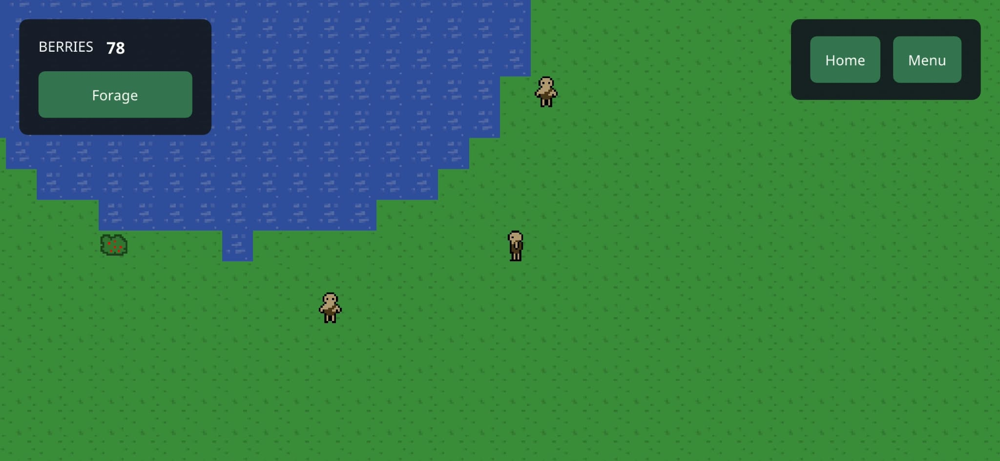

0.5 · 2026-10-28
Smooth walking
Development Version 5
We changed movement to be direct instead of the per tile staircasing. And we added seamless landscape mode!
Walking
- A walk to a bush or the water is one straight line, not a staircase of tile steps. Diagonal trips are also shorter, so they get up to 29% quicker.
- Paths stay about two tiles off ponds and bushes where there's room, so characters go around a corner instead of brushing it.
Collision
- We've added some basic collision. Two characters never overlap, they move around eachother.
- A character that finds someone in its way waits for half a second, then plans a new route around them.
Behind the scenes
- Characters on your screen no longer jump when the server corrects their position, and they stay in view while they walk across the edge of the screen.
- We fixed a vulnerability in this Dev that would allow a player to spam movement retries, which would clog up the server.
Landscape Mode!
- The game now supports landscape mode!! and it is seamless, no settings, just use the phone setting or just turn your phone and watch it change.
THANK YOU FOR PLAYING
Please reach out if you have any questions about the game, or you want access to it while it's in development! jared.allen.games@gmail.com
